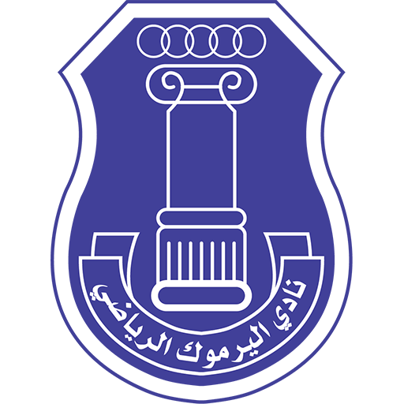
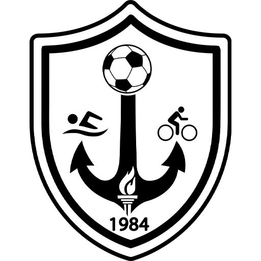
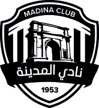
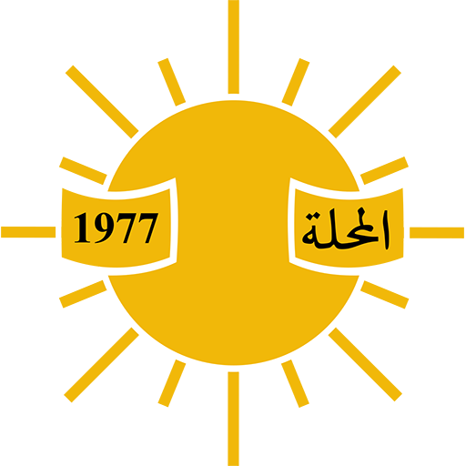
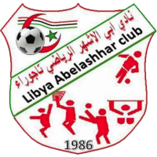
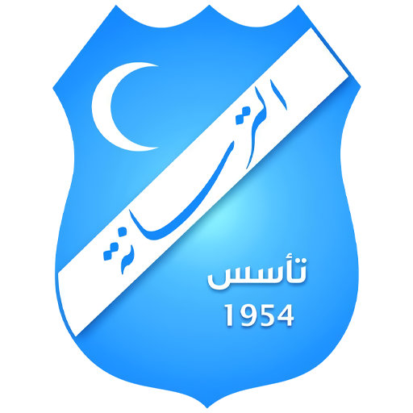
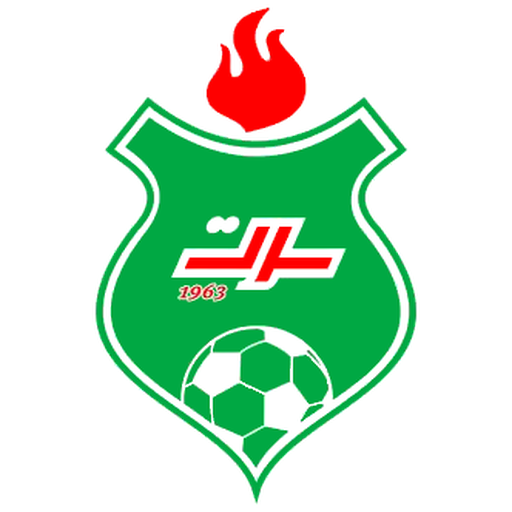
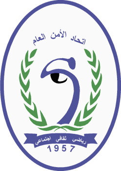
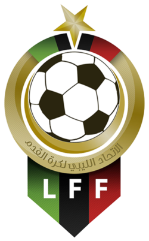

معد بدني محترف في كرة القدم، باحث دكتوراه وماجستير في التربية البدنية وعلوم الرياضة (تخصص اللياقة البدنية والتدريب الرياضي)، يتمتع بخبرة تتجاوز عشر سنوات في الإعداد البدني مع أندية الدوري الليبي الممتاز والمنتخبات الوطنية الليبية في مختلف الفئات. متخصص في تخطيط وتنظيم الأحمال التدريبية، والتقييم البدني الدوري باستخدام أحدث الأنظمة التكنولوجية (GPS / Catapult)، والتكامل التام بين الإعداد البدني والمرافق الطبي لضمان جاهزية اللاعبين وسلامتهم. حاصل على رخص التدريب C وD من الاتحاد الأفريقي لكرة القدم، ويملك مسيرة لاعبة سابقة في أندية الأهلي طرابلس والاتحاد الليبي، ما يمنحه فهماً عملياً شاملاً لمتطلبات كرة القدم الحديثة.
















حمّل السيرة الذاتية
النسخة الكاملة من السيرة الذاتية بصيغة PDF للتواصل مع الأندية والمنتخبات والمؤسسات.